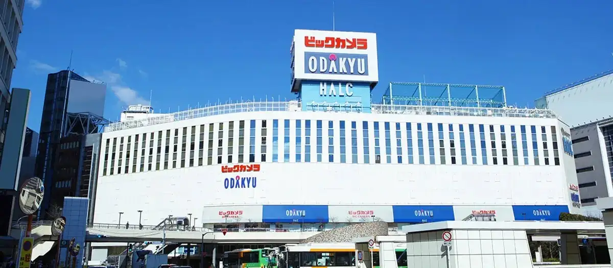
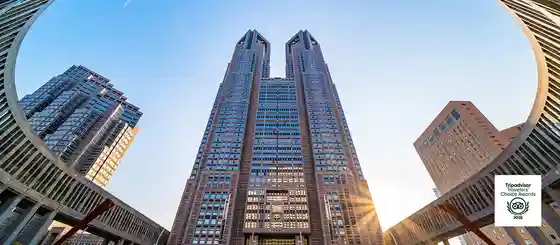
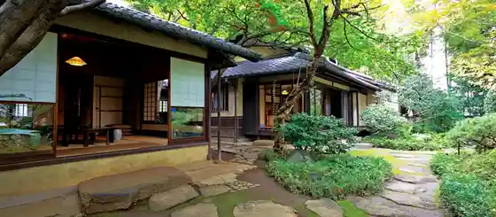

Shinjuku, Tokyo: things to do, food and stays
Shinjuku · Tokyo
Shinjuku
Highlighted on the Tokyo map.

Sights
Odakyu Department Store Shinjuku Store
Tokyo Metropolitan Government Building

Hayashi Fumiko Memorial Museum

MUFG Sutajiamu (National Kyogijo)
Tokyo Operashitei
Hobii Center Kato Tokyo
Meijijingu Gaien
Tokyu Kabukicho Tower
Fire Museum
Miyagi Michio Memorial Museum
Godzilla Head
Godzilla Store Tokyo
Shinjuku Park Tower
Tokyo Omocha Art Museum
Dining
Kasahara
かさ原

Meat restaurant in Shinjuku, Tokyo.
Mitani
三谷

Seafood restaurant in Shinjuku, Tokyo.
OHKUSA
オオクサ

Meat restaurant in Shinjuku, Tokyo.
Kohaku
虎白

Japanese restaurant in Shinjuku, Tokyo.
Kimoto
紀茂登

Japanese restaurant in Shinjuku, Tokyo.
SECRETO

Restaurant in Shinjuku, Tokyo.
Kusunoki Honten
くすのき 本店

Seafood restaurant in Shinjuku, Tokyo.
L'ETERRE Reservation
L'ETERRE

European restaurant in Shinjuku, Tokyo.
NK

Japanese restaurant in Shinjuku, Tokyo.
Tanimoto Reservation
多仁本

Japanese restaurant in Shinjuku, Tokyo.
Sharikimon Onozawa
車力門 おの澤

Noodle restaurant in Shinjuku, Tokyo.
Jfree Reservation
Jfree

European restaurant in Shinjuku, Tokyo.
Mori Fuji
森ふじ

Japanese restaurant in Shinjuku, Tokyo.
400℃ Pizza TOKYO
400℃ PIZZA TOKYO

European restaurant in Shinjuku, Tokyo.
Tsunokamizaka Koshiba Reservation
津の守坂 小柴

Japanese restaurant in Shinjuku, Tokyo.
Sanlucar BAR
サンルーカルバー

Izakaya or bar in Shinjuku, Tokyo.
Tempura Taku Reservation
てんぷら 拓

Seafood restaurant in Shinjuku, Tokyo.
Soba Osame
蕎麦おさめ

Noodle restaurant in Shinjuku, Tokyo.
Ubuka
うぶか

Japanese restaurant in Shinjuku, Tokyo.
SPICY CURRY Roka
SPICY CURRY 魯珈

Chinese or Asian restaurant in Shinjuku, Tokyo.
Tokyo Niku Shabuya Reservation
東京肉しゃぶ家

Meat restaurant in Shinjuku, Tokyo.
Shikataramukana
しかたらむかな

Sweets and bakery shop in Shinjuku, Tokyo.
Egurudousu
エーグルドゥース

Sweets and bakery shop in Shinjuku, Tokyo.
Haramasa Reservation
はらまさ

Japanese restaurant in Shinjuku, Tokyo.
Il Lato

European restaurant in Shinjuku, Tokyo.
Yotsuya Minemura Reservation
四ッ谷 みね村

Japanese restaurant in Shinjuku, Tokyo.
Katsu Pulipo Reservation
Katsuプリポー

Meat restaurant in Shinjuku, Tokyo.
Floraison
フロレゾン

European restaurant in Shinjuku, Tokyo.
Pain des Philosophes
パン・デ・フィロゾフ

Sweets and bakery shop in Shinjuku, Tokyo.
patisserie K.ViNCENT
パティスリー カーヴァンソン

Sweets and bakery shop in Shinjuku, Tokyo.
Spice Bar Mon Curry
Spice Bar モンカリー

Chinese or Asian restaurant in Shinjuku, Tokyo.
SAN TORA
三ん寅

Noodle restaurant in Shinjuku, Tokyo.
RAMEN MATSUI

Noodle restaurant in Shinjuku, Tokyo.
Toriryori Torishou
鳥料理 鳥勝

Restaurant in Shinjuku, Tokyo.
Bungo Mon Eto
豊後もん 江とう

Japanese restaurant in Shinjuku, Tokyo.
Jikasei Chuka Soba Toshioka
自家製中華そば としおか

Noodle restaurant in Shinjuku, Tokyo.
Stay
Keio Plaza Hotel
京王プラザホテル

京王プラザホテル is a hotel in Shinjuku, Tokyo.
Park Haiatto Tokyo
パーク ハイアット 東京

パーク ハイアット 東京 is a place to stay in Shinjuku, Tokyo.
Rihga Royal Hotel Tokyo
リーガロイヤルホテル東京

Rihga Royal Hotel Tokyo is a hotel in Shinjuku, Tokyo.
Daiwa Roynet Hotel Nishi Shinjuku PREMIER
ダイワロイネットホテル西新宿 PREMIER

Daiwa Roynet Hotel Nishi Shinjuku PREMIER is a hotel in Shinjuku, Tokyo.
Shinjuku Washington Hotel Annex
新宿ワシントンホテル ANNEX（別館）

Shinjuku Washington Hotel Annex is a hotel in Shinjuku, Tokyo.
Shinjuku Washington Hotel (Honkan)
新宿ワシントンホテル（本館）

新宿ワシントンホテル（本館） is a hotel in Shinjuku, Tokyo.
Hyatt Regency Tokyo
ハイアット リージェンシー 東京

Hyatt Regency Tokyo is a place to stay in Shinjuku, Tokyo.
Villa Fontaine Tokyo Shinjuku | Sumitomo Realty & Development
ヴィラフォンテーヌ東京新宿｜住友不動産

Villa Fontaine Tokyo Shinjuku | Sumitomo Realty & Development is an inn in Shinjuku, Tokyo.
Hilton Tokyo
ヒルトン東京

Hilton Tokyo is a place to stay in Shinjuku, Tokyo.
Shinjuku Prince Hotel
新宿プリンスホテル

Shinjuku Prince Hotel is a hotel in Shinjuku, Tokyo.
HOTEL GROOVE SHINJUKU, A PARKROYAL Hotel

HOTEL GROOVE SHINJUKU, A PARKROYAL Hotel is a hotel in Shinjuku, Tokyo.
Kimpton Shinjuku Tokyo
キンプトン新宿東京 by IHG

Kimpton Shinjuku Tokyo is an inn in Shinjuku, Tokyo.
Vessel Inn Takadanobaba Ekimae
ベッセルイン高田馬場駅前

Vessel Inn Takadanobaba Ekimae is an inn in Shinjuku, Tokyo.
Tokyu Stay Nishi-Shinjuku
東急ステイ西新宿

Tokyu Stay Nishi-Shinjuku is an inn in Shinjuku, Tokyo.
Nishitetsu Inn Shinjuku
西鉄イン新宿

Nishitetsu Inn Shinjuku is an inn in Shinjuku, Tokyo.
KOKO HOTEL Shinjuku Yotsuya
KOKO HOTEL 新宿四谷

KOKO HOTEL 新宿四谷 is an inn in Shinjuku, Tokyo.
JR West Group Via Inn Iidabashi Korakuen
JR西日本グループ ヴィアイン飯田橋後楽園

JR West Group Via Inn Iidabashi Korakuen is an inn in Shinjuku, Tokyo.
Hotel MyStays Iidabashi
ホテルマイステイズ飯田橋

Hotel MyStays Iidabashi is a hotel in Shinjuku, Tokyo.
Hotel Vintage Kagurazaka
Hotel Vintage 神楽坂

Hotel Vintage 神楽坂 is a hotel in Shinjuku, Tokyo.
Boutique Sauna ARCH

Boutique Sauna ARCH is a place to stay in Shinjuku, Tokyo.